两个 44 × 44 的按钮采用 20px 大圆角，右侧外框为 28px，保留半透明磨砂。打开收藏表单后，摘要与标签直接在这里生成；内容增加时面板按需长高。
以下 13 张为正式 UI 在隔离开发场景中的截图，AI 返回和收藏数据为明确的测试替身。真实 Chrome 已单独验证公开网页自动增强、确认保存和结果复用；没有把模拟画面当成真实 Provider 证据。
实现、验证与证据边界
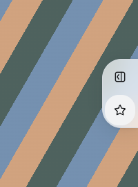
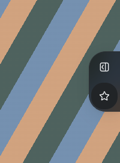
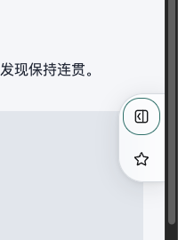
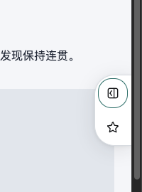
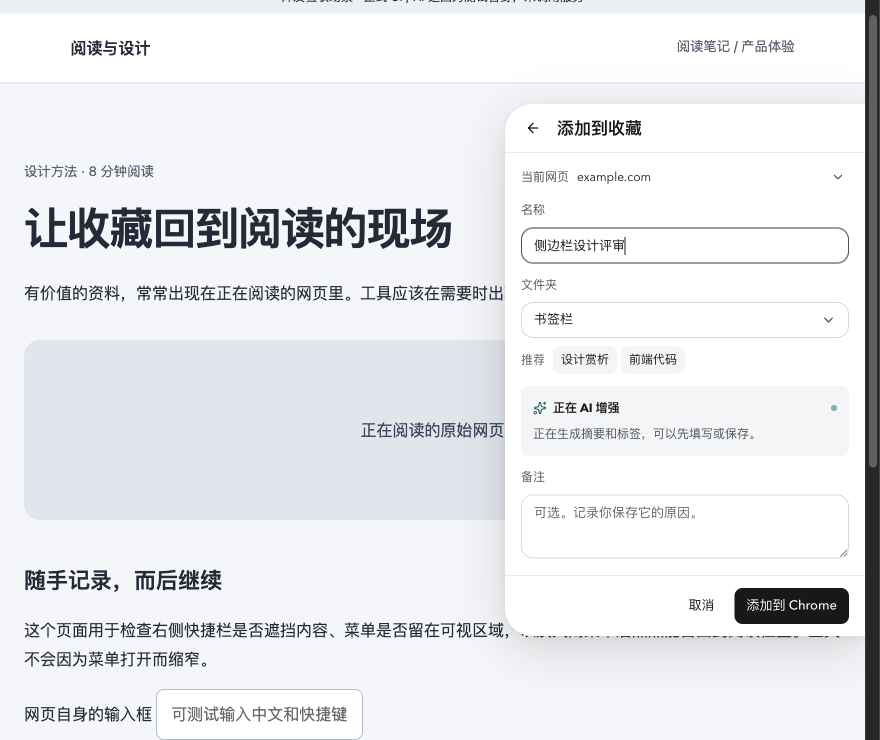
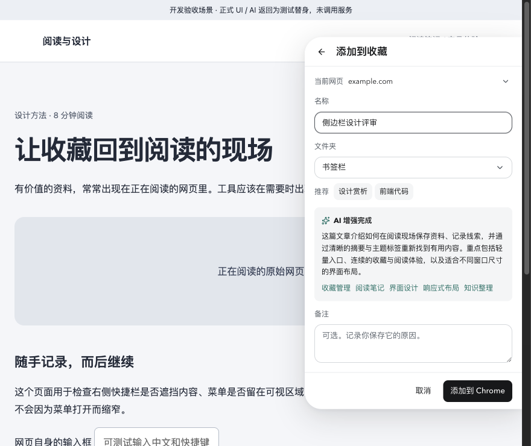
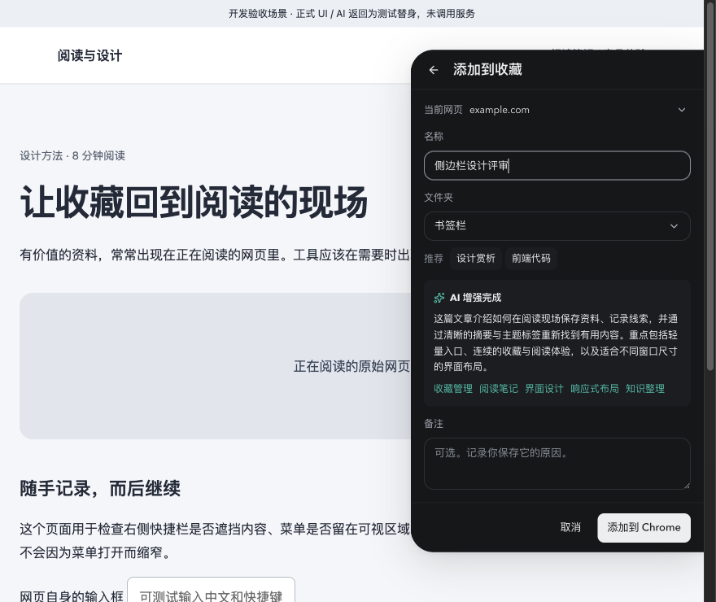
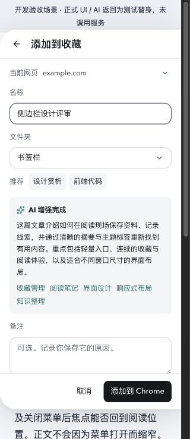
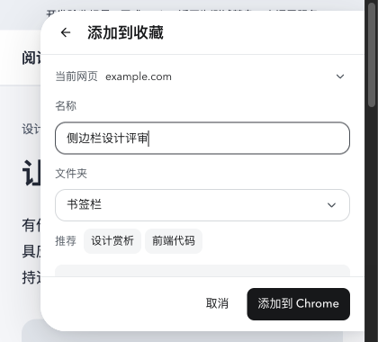
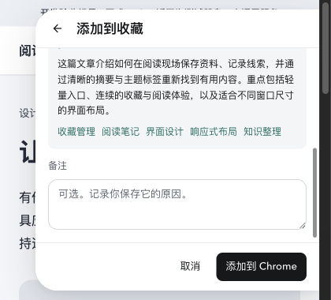
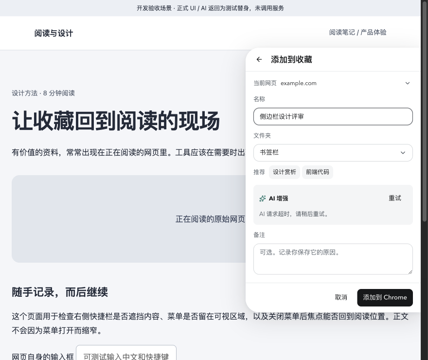
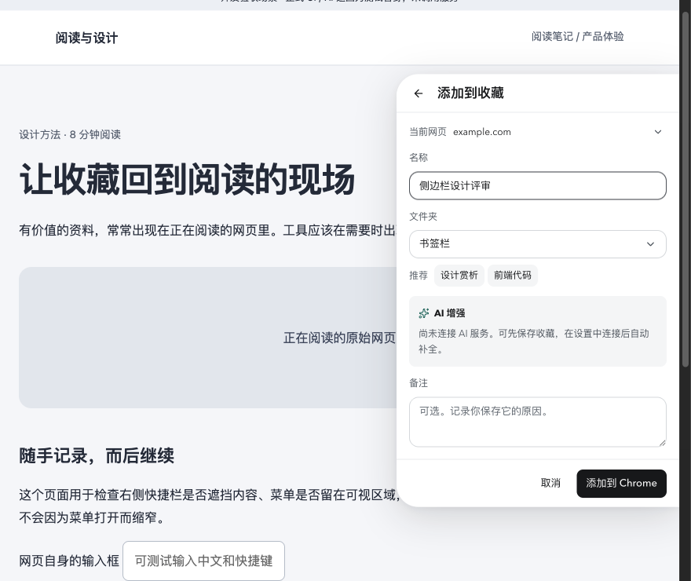
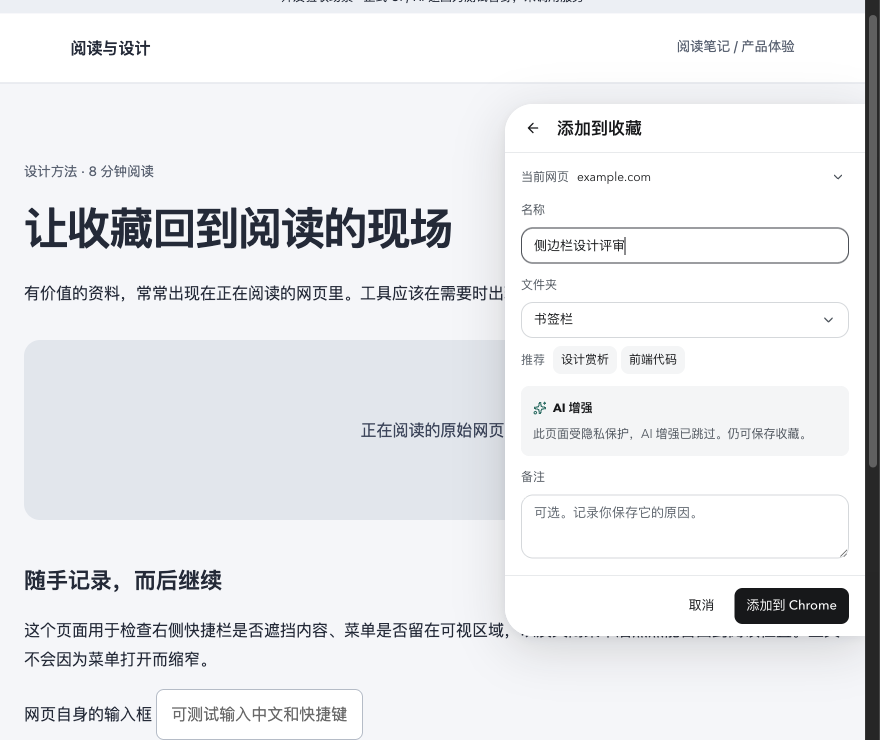
0.6.6 紧凑收藏面板